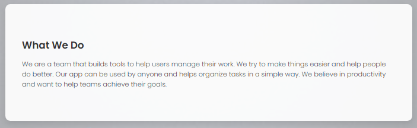

I’m a copywriter who loves turning ideas into clear, persuasive words. From marketing emails to scripts, I aim to write copy that feels real and speaks directly to the reader. I value clarity, purpose, and creativity. Whether it’s reaching new clients or telling a story, the right words make the difference.
Before
After

“Working with Anis Doua has been a truly smooth and reliable experience. His attention to detail and ability to bring fresh, authentic voice to our copy made a noticeable difference in how our audience connects with our brand. Always professional, timely, and easy to communicate with — highly recommended.”